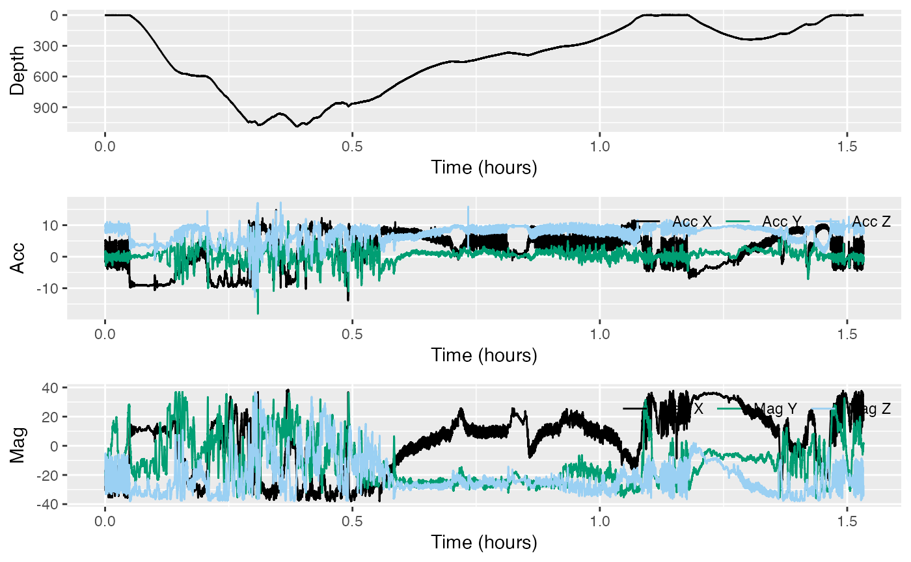
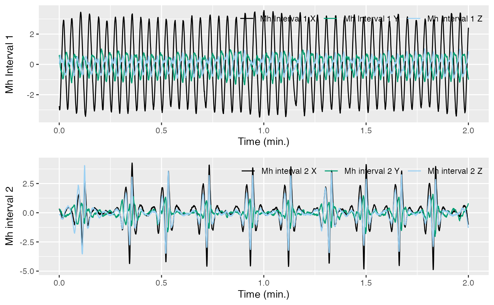
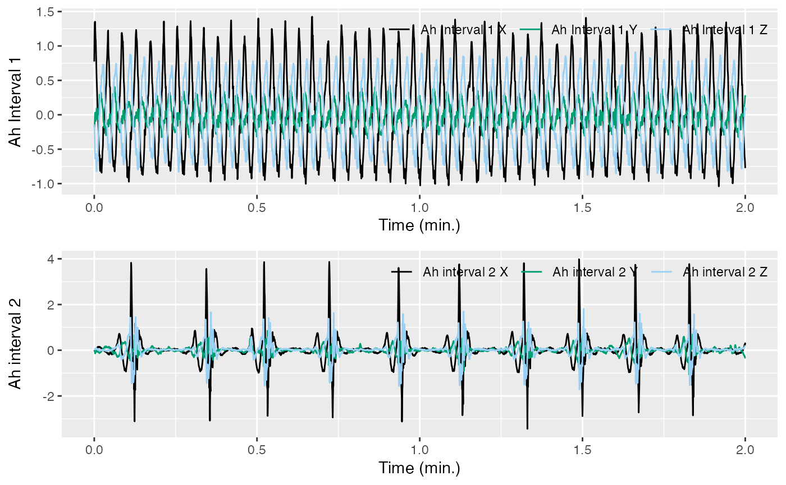
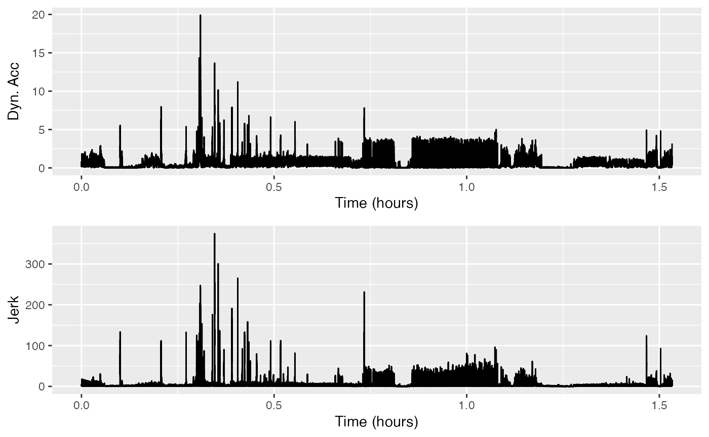

More complementary filtering: magnetometer & dynamic acceleration
tagtools project team
2023-05-04
magnetometer-filtering.RmdWelcome to the magnetometer-filtering vignette! Thanks
for getting some time to know our package—we hope it’s, thus far, all
you’ve dreamed it would be.
This vignette will probably be more insightful if you complete it
after complementary-filtering and/or
jerk-transients, but you are welcome to try it regardless.
In this vignette, you will use a complementary filter to separate
magnetometer data into low and high frequencies. This is similar to what
we do in complementary-filtering with acceleration
data.
Estimated time for this vignette: 25 minutes.
These practicals all assume that you have R/Rstudio installed on your machine, some basic experience working with them, and can execute provided code, making some user-specific changes along the way (e.g. to help R find a file you downloaded). We will provide you with quite a few lines. To boost your own learning, you would do well to try and write them before opening what we give, using this just to check your work.
Additionally, be careful when copy-pasting special characters such as
_underscores_ and ‘quotes’. If you get an error, one thing to check is
that you have just a single, simple underscore, and
'straight quotes', whether 'single' or
"double" (rather than “smart quotes”).
Setup
If you’ve done acceleration-filtering or
jerk-transients within the same R session,
skip down to Spoilers. If, within the same R
session, you’ve done both, skip to Complementary Filter for
Magnetometer. If not, you’ll want to do this section to load the
necessary data, and take a look at it.
For these vignettes we will use data from a suction cup tag attached
to the back of a beaked whale. The data is in testset1.
This dataset is built into the tagtools package, so you can
access it using system.file.
Use load_nc() to read it in—write
testset1.nc to the object bw, for “beaked
whale”. Then use plott() to get a look at it.
library(tagtools)
bw_file_path <- system.file("extdata", "testset1.nc", package = 'tagtools', mustWork = TRUE)
bw <- load_nc(bw_file_path)
plott(X = list(Depth = bw$P, Acc = bw$A, Mag = bw$M))
This dataset contains a deep dive followed by a shallow dive. We want to infer the function of these by looking for locomotion effort and sudden changes in acceleration that could be indicative of prey capture attempts. We are also going to look for changes in swimming gait.
Spoilers
If you’ve done both acceleration-filtering AND
jerk-transients in the same R session, skip down to Complementary Filter for
Magnetometer. If not, you’ll want to do this section. We’ll do a
bunch of spoilers from these two vignettes so that we have the objects
we need. Paste all this code in, and it shouldn’t mess with what you
already had, whether you’ve done one or the other.
# stuff from acceleration-filtering
fc = 0.267032715030423 # filter cut-off frequency
Af <- comp_filt(bw$A, fc = fc) # filtering acceleration data
Alow <- Af[[1]] # low-frequency acceleration
Ahigh <- Af[[2]] # high-frequency acceleration
sampling_rate <- bw$A$sampling_rate # sampling rate for this data
intvl1 <- c(36*60, 38*60)
intvl2 <- c(56*60, 58*60) # two interesting time intervals: 36-38 and 56-58 minutes
Ah1 <- crop_to(Ahigh, sampling_rate = sampling_rate, tcues = intvl1) # high-frequency acceleration data in the first interval
Ah2 <- crop_to(Ahigh, sampling_rate = sampling_rate, tcues = intvl2) # high-frequency acceleration data in the first interval
# stuff from jerk-transients (might depend on stuff from complementary-filtering, just paste it all)
J <- njerk(bw$A) # get jerk
Ad <- decdc(bw$A, 5) # decimate accel data by a factor of 5
Jd <- njerk(Ad) # decimated jerk Complementary Filter for Magnetometer
Let’s get started! Try applying the complementary filter to the
magnetometer data, bw$M, and then plot the high frequency
magnetometer data for the two intervals of swimming that you might have
looked at in the Locomotion style section of
acceleration-filtering.
Mf <- comp_filt(bw$M, fc = fc)
Mhigh <- Mf[[2]] # high frequency M data
Mh1 <- crop_to(Mhigh, sampling_rate = sampling_rate, tcues = intvl1)
Mh2 = crop_to(Mhigh, sampling_rate = sampling_rate, tcues = intvl2)Make a new figure and plot these for comparison.

How do the magnetometer signals compare to the same intervals in the
accelerometer (Ah1 and Ah2)? Either hearken
back to acceleration-filtering or open the following:
# Spoilers from acceleration-filtering. If you want to see how the accelerometer signals in these time intervals look, here's the code.
plott(X = list(`Ah Interval 1` = Ah1, `Ah interval 2` = Ah2), fsx = sampling_rate)
Do you see a similar increase in magnitude in the magnetometer data in interval 2 as you did with acceleration?
Actually, no. In the case of acceleration, in first interval the magnitude of the peaks is usually between \(-1\) and \(+1.5\) \(m/s^2\) , whereas in the second interval the magnitude of the peaks is between \(-3\) and \(+4\) \(m/s^2\). By contrast, in the case of the magnetometer data, the magnitude of the peaks is between \(-4\) and \(+4\) \(\mu T\)in both interval 1 and interval 2.
Remember that the magnetometer is sensitive to postural dynamics but not specific acceleration. Can you conclude whether the difference between the swimming styles is a result of larger amplitude swimming strokes (i.e., a larger orientation dynamic due to body undulations) or a larger specific acceleration, or a bit of both?
The magnetometer is not reporting a difference, but the accelerometer is. So the difference between swimming styles must be due to a larger specific acceleration, not postural dynamics.
Jerk vs. Dynamic Acceleration
As you may know, any high-pass filter will emphasize rapid changes in acceleration.
Jerk is effectively a filter that emphasises higher frequencies
progressively more. You could also use a filter that is flat above a
cut-off frequency, like the complementary filter you used to make
Ahigh.
To get the magnitude of the three axes together like with
njerk(), use norm2(). This gives what is
sometimes called the dynamic acceleration:
DA <- norm2(Ahigh)Plot DA and J to compare them:

Check out the obvious peaks around minute 20 to minute 30 to see how
clear they look in DA and J. Which signal
gives the lowest noise between the peaks, i.e., the best signal-to-noise
ratio? What does that suggest about the frequency content in the
acceleration transients? Give some thought to your answers–you’re so
close.
Jerk gives a better signal-to-noise ratio than dynamic acceleration. This suggests that the acceleration transients happen so quickly, so it is important to have high-resolution data. Is this right?
Review
You’ve learned how to separate low- and high-frequency magnetometer data with a complementary filter, and done some interpretation of these two sets of data.
Fabulous work! You pranced all the way through this vignette.
If you’d like to continue working through these vignettes,
fine-scale-tracking is a fairly logical option. In it,
you’ll consider dead-reckoned paths as a way to visualize how an animal
might move, why this can lead to large errors, and how to correct for
some of those errors.
vignette('fine-scale-tracking')Animaltags home pages: http://animaltags.org/ (old), https://animaltags.netlify.app/ (new), https://github.com/stacyderuiter/TagTools (for latest beta source code), https://stacyderuiter.github.io/TagTools/articles/TagTools (vignettes overview)